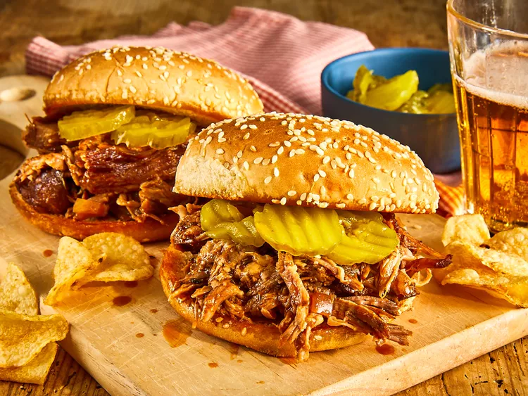

Home
Pull Pork Recipe

Description
This is a simple and delicious recipe for making pulled pork in a slow cooker. Perfect for sandwiches or as a main dish.
This Texas-style pulled pork recipe has a tangy barbeque sauce that's easy to make in the slow cooker. I like to serve the shredded pork on toasted buttered rolls. My family's favorite!
This pulled pork recipe is tender, juicy, and oh-so flavorful — and it’s incredibly easy to make in your slow cooker!
Ingredients
- Oil
- Pork
- Sauces
- Apple cide vinegar
- Broth
- Brown sugar
- seasonings
- onion
- Buns and butter
Steps
- Pour oil into the slow cooker, then place the roast on top of the oil.
- Add the remaining ingredients to the slow cooker.
- Cover and cook until the pork shreds easily.
- Shred the pork and return it to the slow cooker to combine it with the juices.
- If you’re making sandwiches, serve the pulled pork on buttered buns.